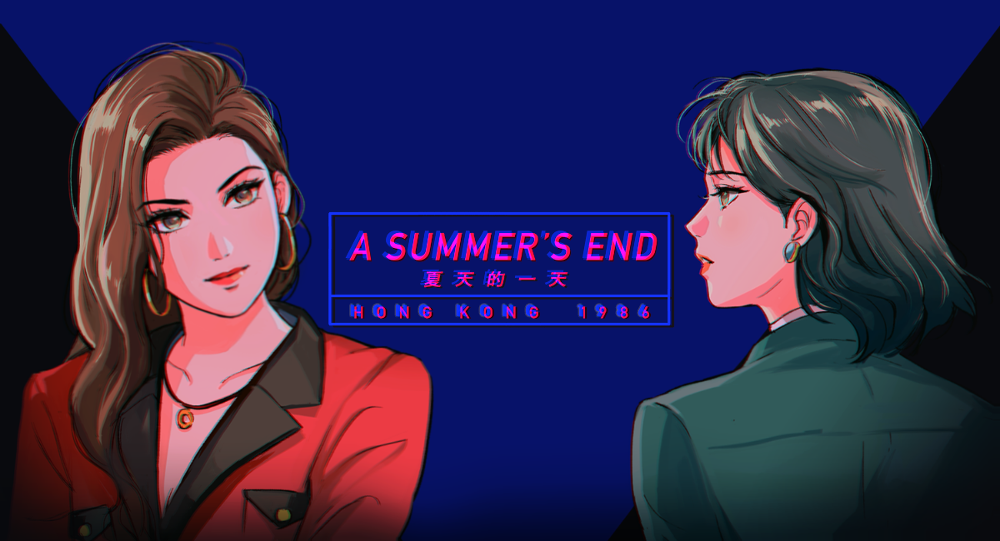

Welcome to my A Summer’s End — Hong Kong 1986 Shrine!
A Summer’s End — Hong Kong 1986 is a visual novel developed by Oracle and Bone, a Canada-based independent studio consists of two Asian queer women, Charissa So and Tida Kietsungden. The visual novel tells of a lesbian romance story between Michelle Cheung, an office worker, and Sam Wong, a video store owner, that takes place in Hong Kong in the year of 1986.
Initially released in English on 23 Apr, 2020, A Summer’s End has also been translated into Simplified Chinese, Traditional Chinese and Cantonese. The Chinese translations were released on July 9, 2021.
A Summer’s End is available on Steam and itch.io. It also has an official website.
How I Discovered A Summer’s End — Hong Kong 1986

I first learned about A Summer’s End — Hong Kong 1986 through Linux Game Consortium, a Linux gaming news website. There was a period where I set up my gaming laptop to dual boot Windows 10 and Linux, so I ended up following Linux gaming news for a while. While Windows is still my main platform for gaming, the discovery of A Summer’s End was the biggest unexpected benefit and surprise when I tried out Linux.
As a lesbian, the premise of a visual novel about a sapphic romance already caught my interest, but what urged me to play it even more was the Hong Kong setting, which made my interest in the game personal, since I am a Cantonese-speaking Chinese lesbian who grew up with Hong Kong media. Not to mention, it is rare to see a fiction that tells of a sapphic love story that takes place in Hong Kong.
Why A Summer’s End — Hong Kong 1986 is Special to Me
As a Chinese lesbian who speaks Cantonese and had engaged with a lot of Hong Kong media during my teenage years, A Summer’s End - Hong Kong 1986 is the lesbian story that I relate to and feel represented the most.
I relate to both the protagonists, Michelle and Sam, as their characters represent different parts of my life as a Chinese lesbian. I also relate to the story’s theme of hoping for the future of our homeland despite the political uncertainties.
My standards for lesbian representation in media has also become much higher because of this visual novel, since A Summer’s End is also a perfect example of how some of the best representations of minority groups are actually found in media made by indie creators, especially those who are part of those minority groups, so we shouldn’t rely on mainstream media for representation especially when big name media companies are going to just give us scraps.
If you ask me to list just one piece of queer art that means everything to me, that gives me comfort, inspiration, and strength the most, A Summer’s End would be it.
I seriously cannot recommend A Summer’s End enough, especially for Asian sapphic women.